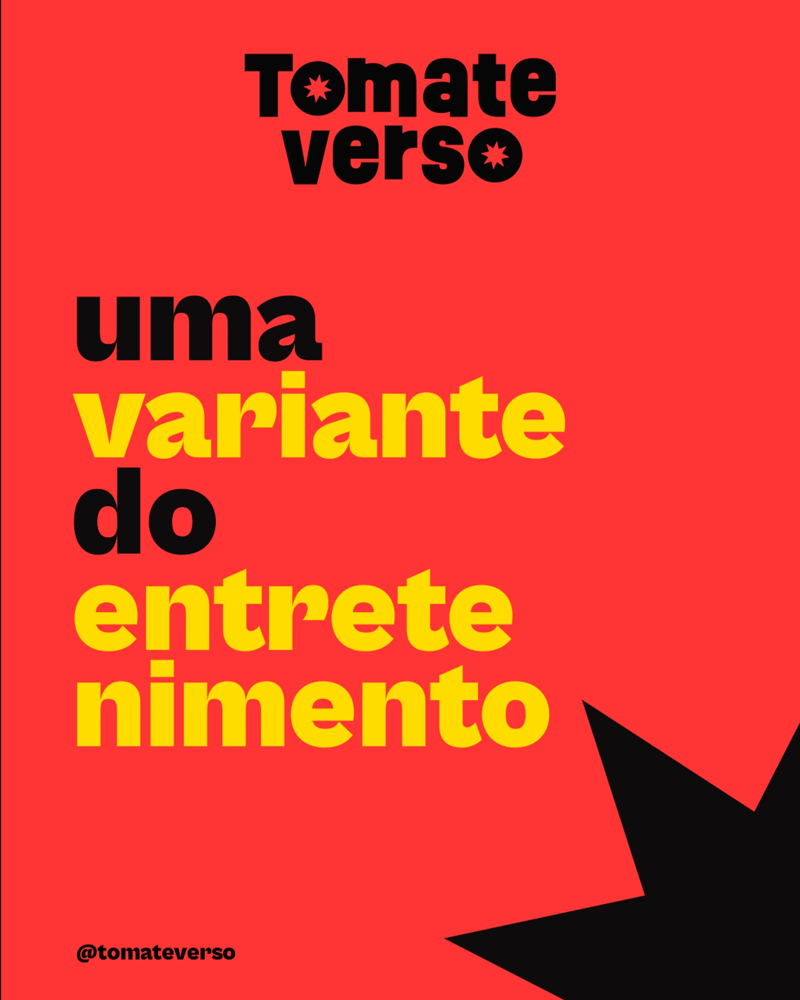
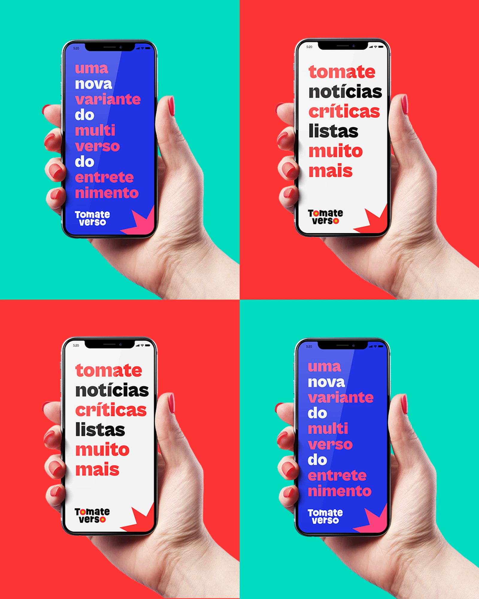
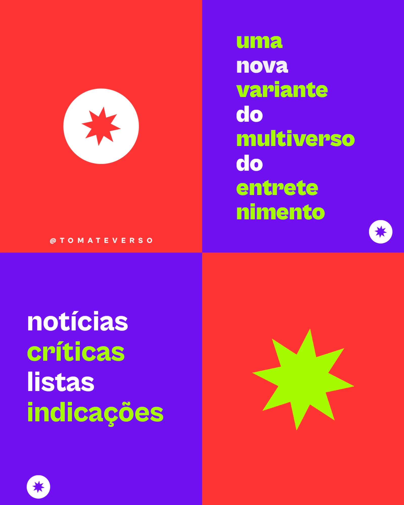
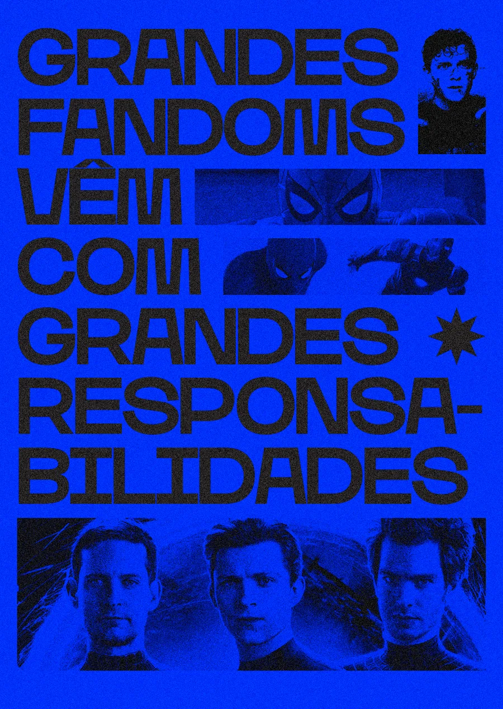
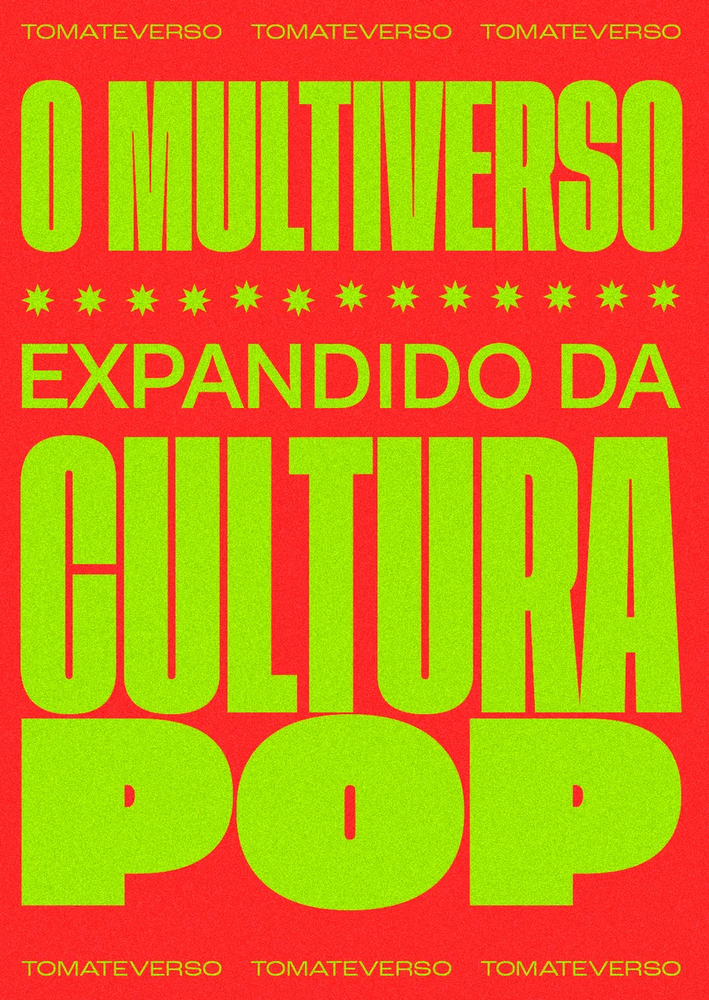
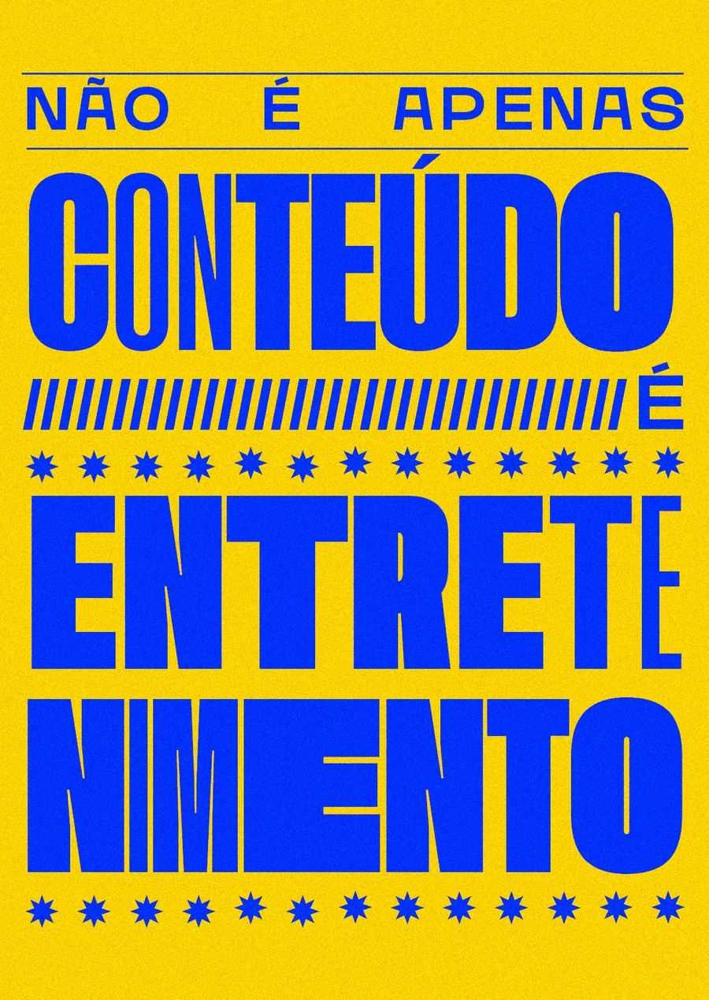
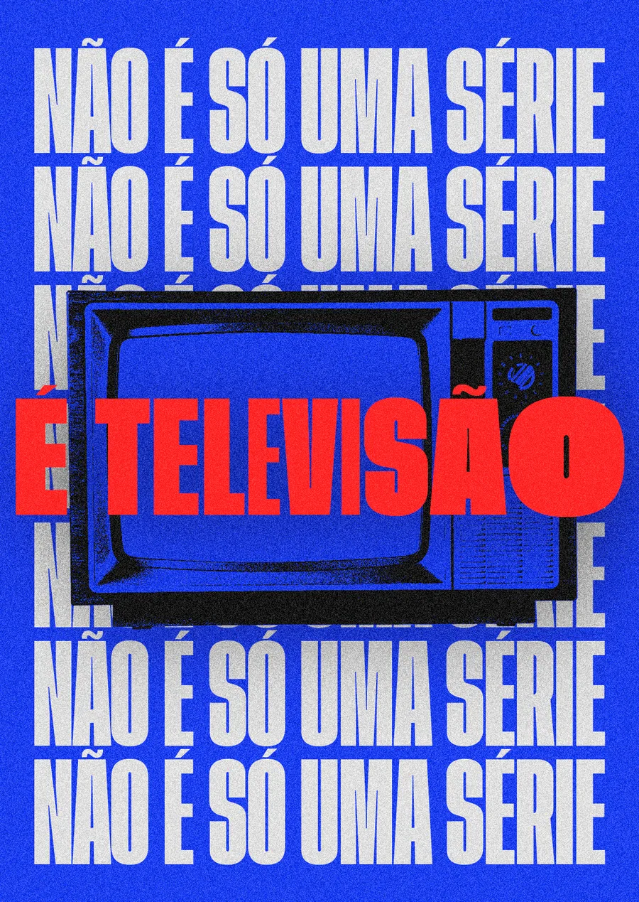
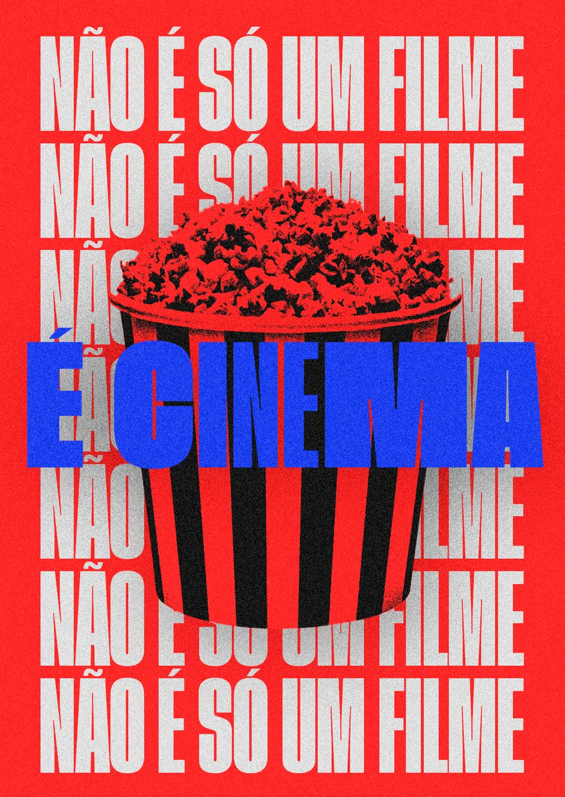

05Projetos pessoaisPersonal projects3 cases
Stuff
Projetos-fantasma: aquelas ideias que ninguém pediu, mas que eu simplesmente precisava colocar no mundo. Ghost projects: the kind of ideas no one asked for, but I just had to bring to life.
Tomateverso
O entretenimento tem uma nova variante.
Três criativos universitários, uma paixão em comum: tudo o que move a cultura pop, o show biz e o universo dos fandoms. Criamos o Tomateverso, um espaço geek, diverso e inteligente, feito para furar bolhas e construir pontes.
Entre filmes, séries, animes, livros e games, criamos um projeto com DNA de fãs, inspirado pelo Rotten Tomatoes e pelo conceito de multiverso. Mas aqui, o universo é nosso. Feito por fãs, e para fãs, o Tomateverso é a nova variante do multiverso do entretenimento. E meu espaço para falar do que amo. E conectar com quem ama também.
Entertainment has a new variant.
To embrace pop culture, showbiz, and the universe of fandoms, three college creatives united around one shared obsession: what they love. We built Tomateverso — an inclusive, geek-powered space that breaks bubbles and builds bridges, delivering smart, passionate content across film, TV, anime, music, books, and games.
Inspired by Rotten Tomatoes and the multiverse theory, this project was crafted by fans, for fans. In a multiverse of content, this is our boldest reality yet. Tomateverso was my universe to speak about what I love — and connect others who love it too.










↘ Ficha técnicaCredits
- RedaçãoCopywriter
- Isaac Alexandre
- Direção de arteArt direction
- Victor Hudson & Matheus Souza
- Meu papelMy role
- Conceito & redaçãoConcept & copywriting
Te vejo na final
Reivindicar o campo.
No segundo romance de Ayslan Monteiro, uma nova narrativa ocupa espaços que antes nos eram negados. Futebol e comunidade LGBTQIAP+ quase nunca se cruzam. Essa história muda isso.
É sobre sair do armário, ressignificar papéis e desafiar estruturas usando a própria linguagem que elas criaram. Até os pôsteres jogam junto, subvertendo termos do futebol em pequenos atos de resistência. E dessa vez, o jogo virou.
Claiming the field.
In his second YA novel, Ayslan Monteiro brings a bold, necessary narrative, one that reclaims queer voices in spaces they’ve long been shut out of. Football and queerness rarely meet. This story changes that.
It’s about breaking closets, redefining roles, and challenging a system through the very language it built. Even the posters play along, twisting football terms into quiet acts of resistance. And this time, the game changed.


↘ Ficha técnicaCredits
- RedaçãoCopywriters
- Isaac Alexandre & Ayslan Monteiro
- Direção de arteArt direction
- Rafael Espírito
- Meu papelMy role
- RedaçãoCopywriting
Invasion iFood
Delivery que desafia a gravidade.
Em janeiro de 2022, o iFood se tornou a primeira empresa das Américas autorizada a fazer entregas por drone. A tecnologia não substitui, complementa. É a solução para onde rodas não chegam. O primeiro caso? A rota entre Aracaju e Barra dos Coqueiros, em Sergipe. Uma ponte, trânsito parado, mais de 40 minutos de atraso. Com o drone, o que era inviável virou instantâneo.
Para marcar essa virada, lançamos uma campanha que transformou inovação em cultura pop. Extraterrestres invadem a Terra, não para dominar, mas para experimentar o futuro da entrega. Com iFood, seu pedido sempre encontra um caminho. Até voando.
Delivery that defies gravity.
January 2022. iFood becomes the first company in the Americas cleared to deliver by drone. The tech is additive, not a replacement: drones extend the fleet where wheels slow down. Use case number one: Aracaju to Barra dos Coqueiros, Sergipe. One bridge, gridlocked traffic, forty-plus minutes lost. The drone hop turns an impossible route into a quick drop.
To launch the service we turned innovation into pop culture. The campaign imagines aliens drawn to Earth by the ease of airborne delivery, twisting sci-fi lore into a brand love story that is playful, shareable and irresistibly simple. With iFood, your order always finds a way. Even if it has to fly to get there.

↘ Ficha técnicaCredits
- DireçãoDirectors
- Isaac Alexandre & Victor Hudson
- RoteiroWriters
- Isaac Alexandre, Ander Martins, Lisane Rocha & Victor Hudson
- Direção de arteArt direction
- Laura Maria & Emmanuel Barros
- Edição & somEditing & sound
- Gabriel Dantas & Ricardo Nascimento
- Meu papelMy role
- Roteiro & direçãoWriter & director